Карниз с липучкой для ламбрекенов. Варианты изготовления загибов к стене.Изготовление изделия до 6м без стыка
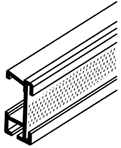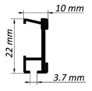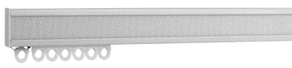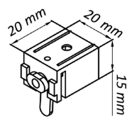
Раздвижной электрокарниз белый. Изготовление изделия до 6м без стыка
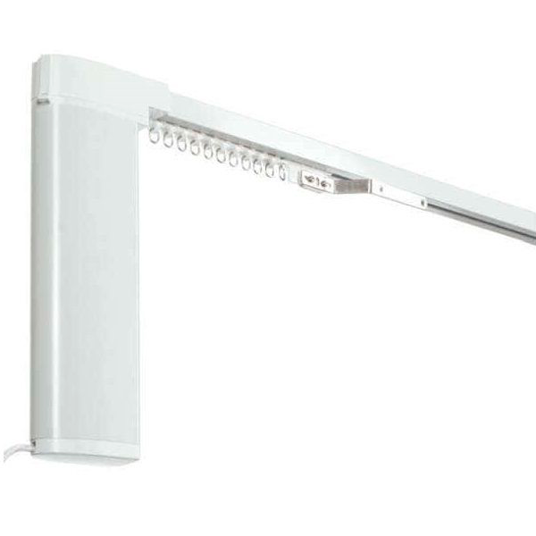Раздвижной электрокарниз чёрный. Изготовление изделия до 6м без стыка
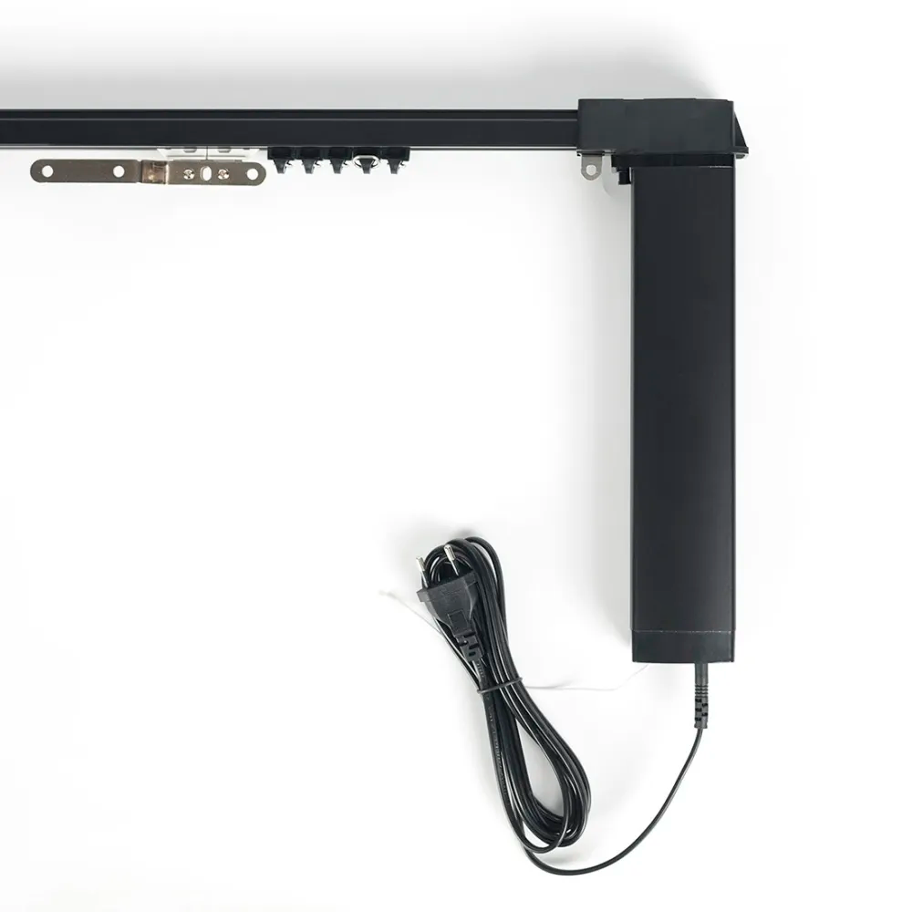Карниз для среднего веса штор в ассортименте цветов. Пример изготовления эркера.Изготовление изделия до 6м без стыка
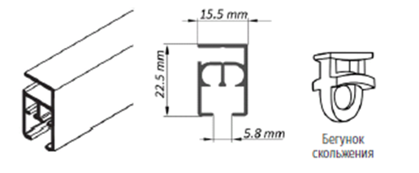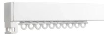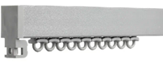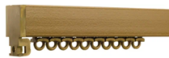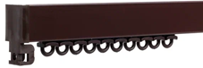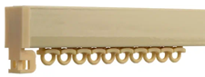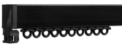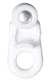Карниз полукруглой формы с раздвижным ручным управлением для среднего и тяжёлого веса штор.
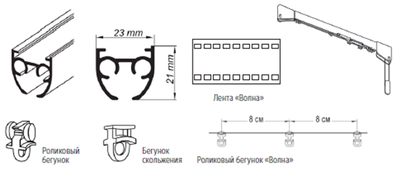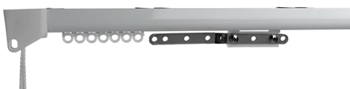Карниз с раздвижным ручным управлением для среднего и тяжёлого веса штор с роликовыми бегунками
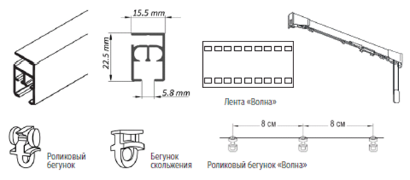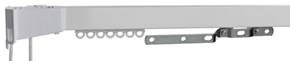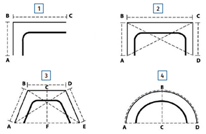Подъёмный карниз для римских, австрийских, французских штор.Изготовление изделий высотой до 4-х м.
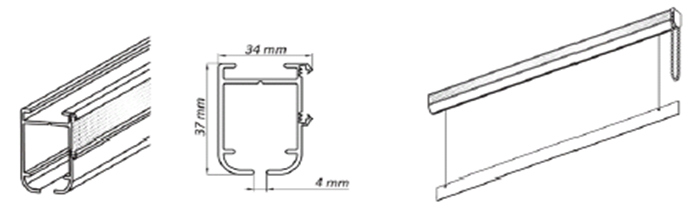Подъёмный карниз для римских, австрийских, французских штор черного цвета.Изготовление изделий высотой до 4-х м
.jpg)
Усиленный карниз для тяжёлого веса штор с ручным раздвижным управлением.Изготовление изделия до 6м без стыка
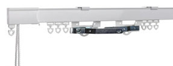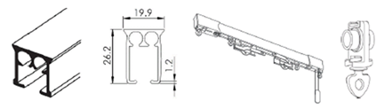Усиленный карниз для тяжёлого веса штор с роликовыми бегунками.Изготовление изделия до 6м без стыка
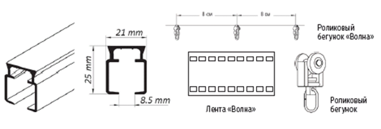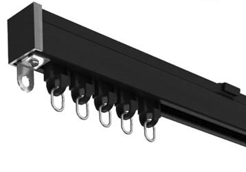Карниз для тяжёлого веса штор с усиленными бегунками.Изготовление изделия до 6м без стыка
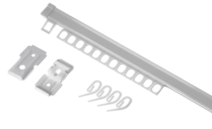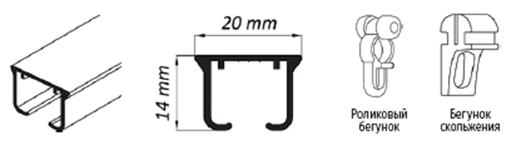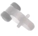
Карниз для среднего и тяжёлого веса штор в ассортименте цветов.Изготовление изделия до 6м без стыка
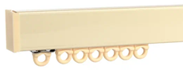 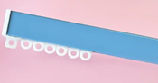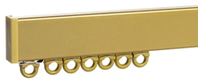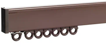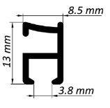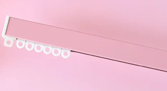
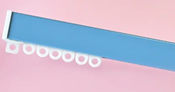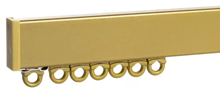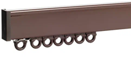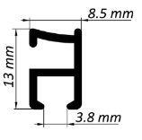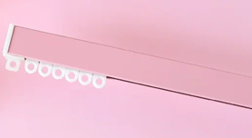Супертонкий карниз для лёгкого веса штор.Изготовление изделия до 6м без стыка
Трёхрядный карниз для среднего тяжёлого веса штор.Изготовление изделия до 6м без стыка
Трёхрядный карниз для среднего тяжёлого веса штор с роликовыми бегунками.Изготовление изделия до 6м без стыка
Тонкий карниз для лёгкого веса штор в ассортименте цветов.Возмозность изгибов в любой плоскости.Изготовление изделия до 6м без стыка
Двухрядная шина с роликовыми бегунками.Изготовление изделия до 6м без стыка